CONCERT
Asier Polo & Eldar Nebolsin
Festival de Música Antonio de Cabezón · Burgos, Spain
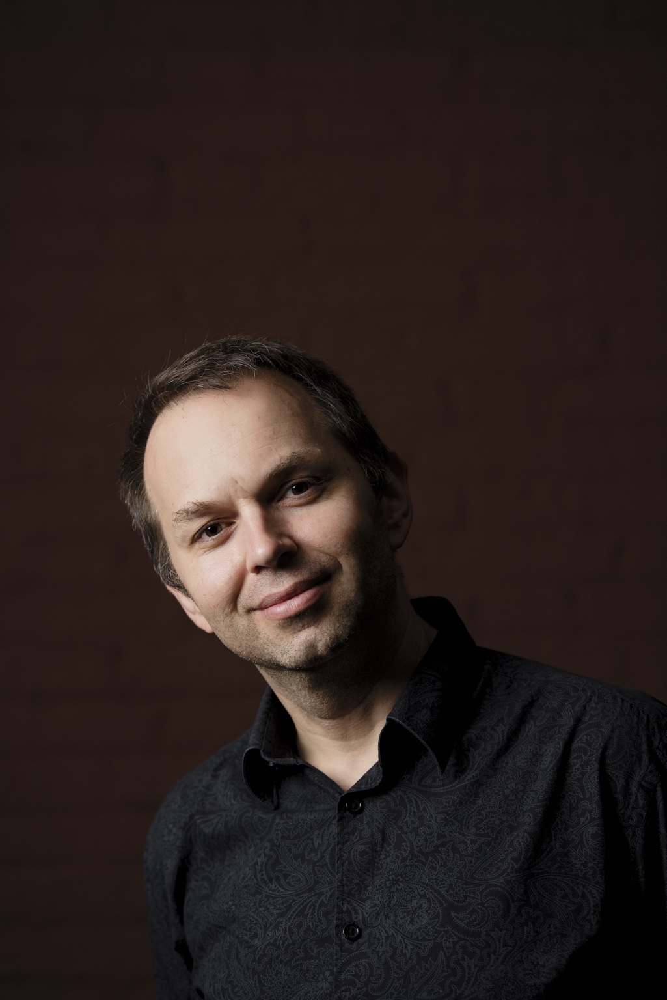
Pianist · Recording artist · Pedagogue
“A virtuoso of power and poetry, rivalling Rubinstein.”
Gramophone
“A virtuoso of power and poetry, rivalling Rubinstein.”— Gramophone
About
Eldar Nebolsin’s international career began at the age of seventeen, when he won the Grand Prize at the Santander International Piano Competition. In 2005 he was awarded First Prize at the Sviatoslav Richter International Piano Competition in Moscow.
He has performed with the New York Philharmonic, Chicago Symphony Orchestra, Deutsches Symphonie-Orchester Berlin, Orchestre de Paris, Tokyo Metropolitan Symphony Orchestra and Sydney Symphony Orchestra, working with conductors including Mstislav Rostropovich, Riccardo Chailly, Charles Dutoit, Leonard Slatkin and Vladimir Ashkenazy.
Since 2013 he has been Professor of Piano at the Hochschule für Musik Hanns Eisler Berlin. He is also a member of Spectrum Concerts Berlin and has recorded extensively for Decca, Naxos, Oehms and other labels.
“Eldar’s recording of Rachmaninov Preludes is on my all-time favorites playlist.”— Menahem Pressler
Season 2026–27
Concerts, artistic projects and teaching engagements
Chronological calendar
CONCERT
Festival de Música Antonio de Cabezón · Burgos, Spain
CONCERT
Bucharest, Romania · 3, 4 & 5 November
RECITAL
Sociedad Filarmónica de Bilbao · Bilbao, Spain
CONCERT
Berlin Philharmonie · Spectrum Concerts Berlin
Debussy · Ravel · Chausson
MASTERCLASS
Murcia, Spain
CONSULTATION
Worldwide · with Eldar Nebolsin
Archive
Selected artistic projects and collaborations
A film by Jan Schmidt-Garre · Eldar Nebolsin as Sergei Rachmaninoff
Decca · Naxos · Oehms · IBS Classical
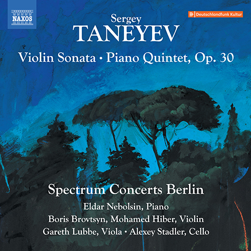
2024Taneyev: Violin Sonata & Piano Quintet, Op. 30Spectrum Concerts Berlin · Naxos 8.574566Naxos ↗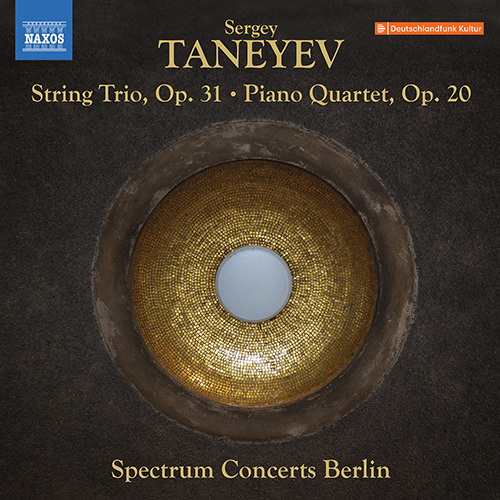
2022Taneyev: String Trio, Op. 31 & Piano Quartet, Op. 20Spectrum Concerts Berlin · Naxos 8.574367Naxos ↗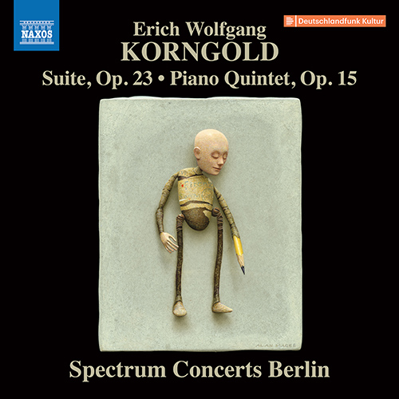
2020Korngold: Suite, Op. 23 & Piano Quintet, Op. 15Spectrum Concerts Berlin · Naxos 8.574019Naxos ↗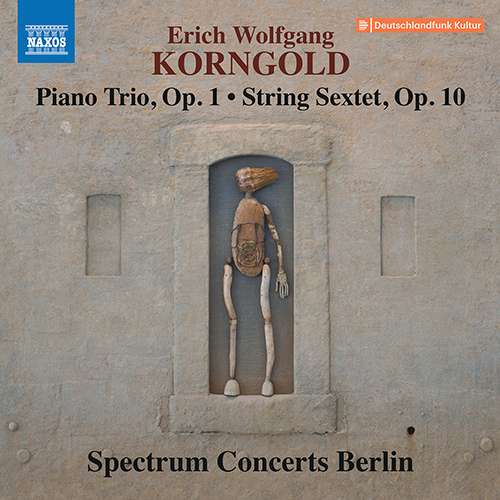
2020Korngold: Piano Trio, Op. 1 & String Sextet, Op. 10Spectrum Concerts Berlin · Naxos 8.574008Naxos ↗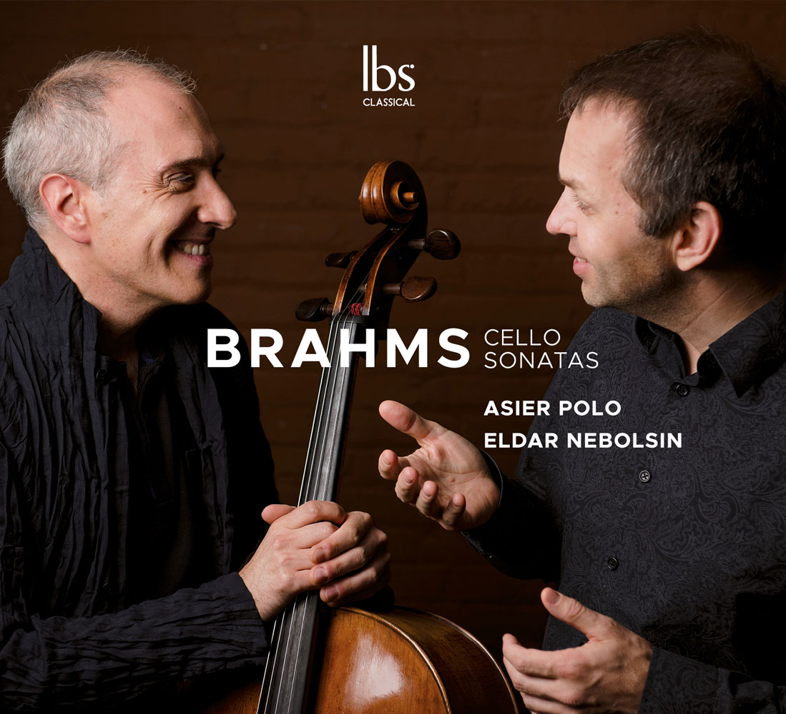
2019Brahms: Cello SonatasAsier Polo, cello · Eldar Nebolsin, piano · IBS ClassicalIBS ↗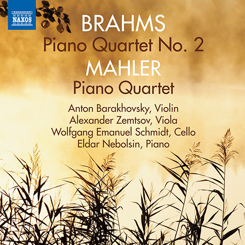
2017Brahms: Piano Quartet No. 2 & Mahler: Piano QuartetNaxos 8.572799Naxos ↗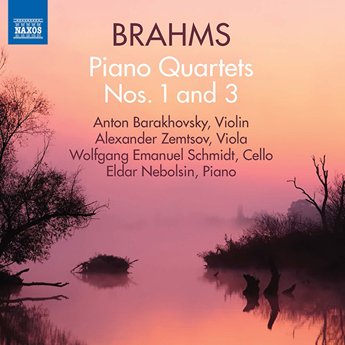
2016Brahms: Piano Quartets Nos. 1 & 3Naxos 8.572798Naxos ↗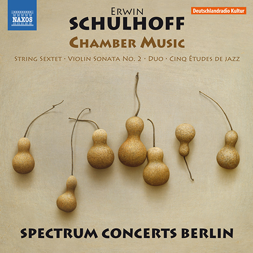
2016Erwin Schulhoff: Chamber MusicSpectrum Concerts Berlin · Violin Sonata No. 2 & 5 Études de jazz · Naxos 8.573525Naxos ↗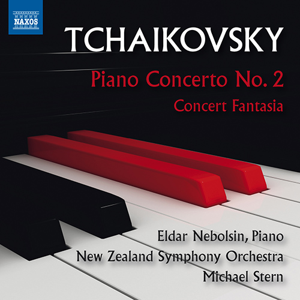
2016Tchaikovsky: Piano Concerto No. 2 & Concert FantasiaNew Zealand Symphony Orchestra · Michael Stern · Naxos 8.573462Naxos ↗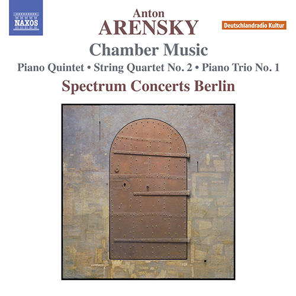
2015Arensky: Piano Quintet, Piano Trio No. 1 & String Quartet No. 2Spectrum Concerts Berlin · Naxos 8.573317Naxos ↗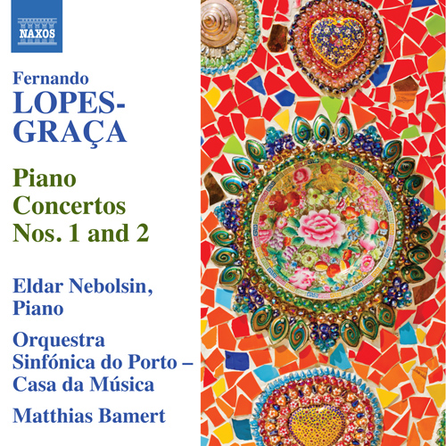
2013Lopes-Graça: Piano Concertos Nos. 1 & 2Orquestra Sinfónica do Porto–Casa da Música · Matthias Bamert · Naxos 8.572817Naxos ↗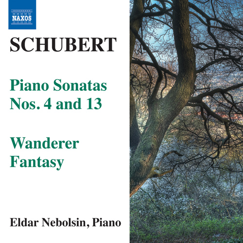
2011Schubert: Piano Sonatas Nos. 4 & 13 · Wanderer FantasyNaxos 8.572459Naxos ↗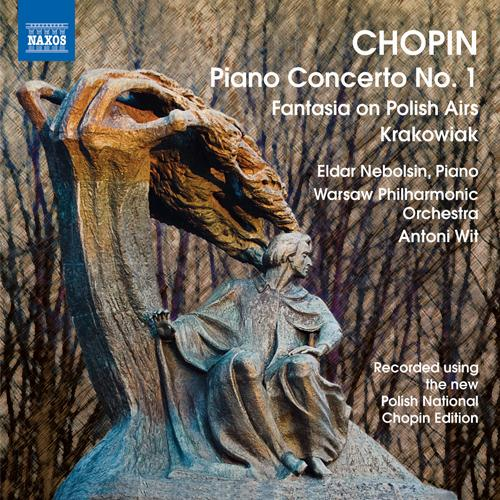
2010Chopin: Piano Concerto No. 1 · Fantasy on Polish Airs · KrakowiakWarsaw Philharmonic · Antoni Wit · Naxos 8.572335Naxos ↗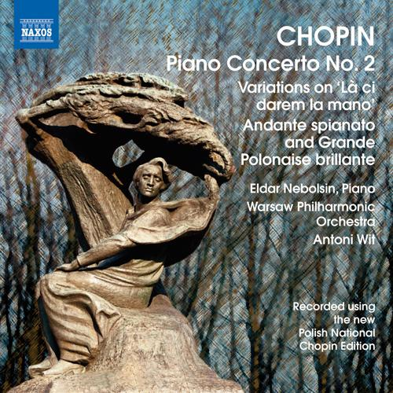
2010Chopin: Piano Concerto No. 2 · Variations on “Là ci darem” · Andante spianato & Grande PolonaiseWarsaw Philharmonic · Antoni Wit · Naxos 8.572336Naxos ↗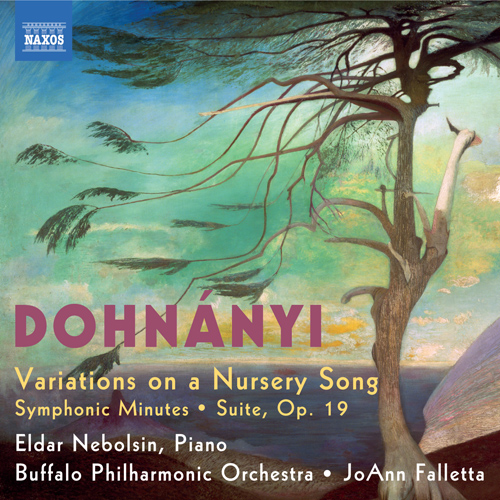
2010Dohnányi: Variations on a Nursery SongBuffalo Philharmonic Orchestra · JoAnn Falletta · Naxos 8.572303Naxos ↗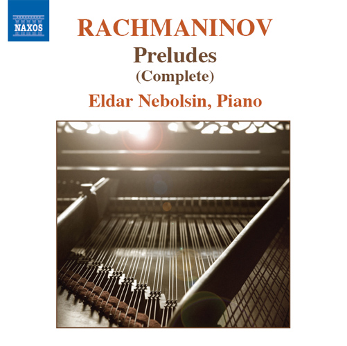
2007Rachmaninov: Complete PreludesNaxos 8.570327Naxos ↗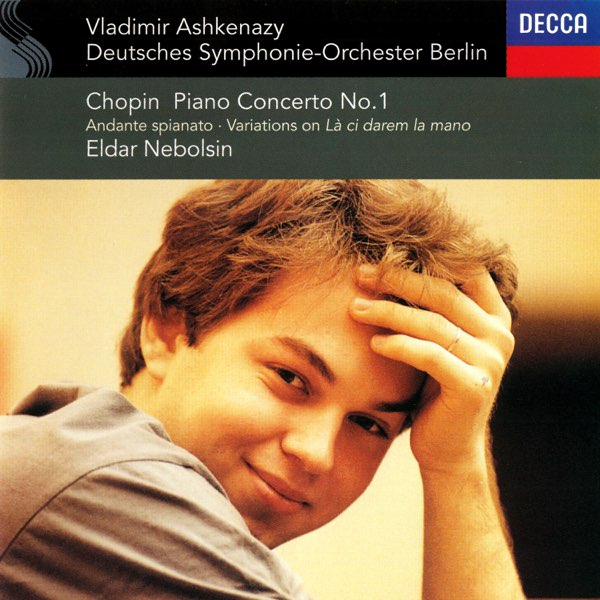
1996Chopin: Piano Concerto No. 1 · Variations on “Là ci darem” · Andante spianato & Grande PolonaiseDeutsches Symphonie-Orchester Berlin · Vladimir Ashkenazy · Decca 448 138-2 · recorded 21 December 1994Decca ↗Professor & mentor
Eldar Nebolsin is Professor in the Piano Faculty of the Hochschule für Musik Hanns Eisler Berlin ↗.
Selected students and prizewinners at many of the world’s leading international piano competitions.
First Prize · Long–Thibaud International Piano Competition
Winner · Silver Medal, Kissinger KlavierOlymp
Second Prize · International Chopin Piano Competition
Pianist · Cleveland, Rubinstein & Montréal prizewinner
International concert pianist
First Prize · Arthur Rubinstein Competition & Santander Competition
Prizewinner · International Chopin Piano Competition
Pianist
Pianist
Croatian concert pianist
Winner · Deutscher Pianistenpreis
Pianist · First Prize, Verão Clássico Festival Awards
Pianist · Trio Brontë
Deutsche Grammophon artist
Pianist
First Prize · International Edvard Grieg Piano Competition
Press & media
Fundación Juan March · recital by Eldar Nebolsin
Watch YouTubeLIVEROSS · Seville · György Gyoriványi Ráth
Watch YouTubeLIVEBucharest · Christian Badea
Watch YouTubeVerão Clássico · Eldar Nebolsin
Watch YouTubeAsier Polo & Eldar Nebolsin
Watch YouTubeOrquesta Sinfónica de Galicia · Rubén Gimeno
Watch SpotifyA curated selection of recordings
ListenPress photographs
High-resolution files for editorial and promotional use
Contact
{kind=link}
{kind=link}
{kind=link}
{kind=link}